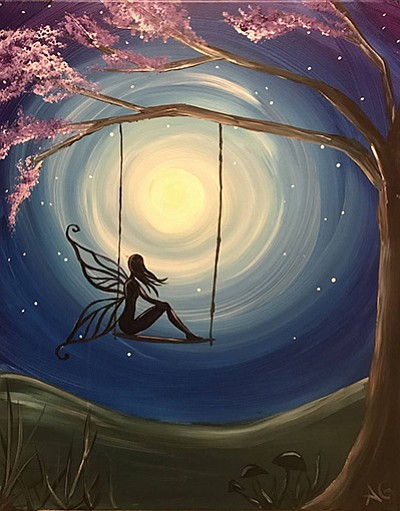

After Hou Yi shoots the extra 9 suns, he became fierece and desire about power. He became less care about people and even his wife Chang Ee. Hou Yi's desire grouwth further and further, until he found out that The Queen Mother of West had a pill that can help epople to be immortal annd powerful. After Chang Ee found out that Hou Yi changed to another person who stimulated his inner evil side of the human beings. Hou Yi then stole the pill from The Queen Mother of West, mad hide it to wait for the special momet came.
When Chang Ee found out that Hou Yi had the immortal pill, Chang Ee started to worry about the peopel live under the control from Hou Yi. Due to Chang Ee was too nice to being selfish, she took the pill and took away the power from Hou Yi as well.
Chang Ee used her life of freedom for exchanging of majority of people's life. People felt sorry and really thanks Chang Ee for saving this town, on every 15th of May, people have mooncake to show that they are missing her and want her be happy as everyone is on that day. This is a sad story verision between the love from Hou Yi to Chang Ee.